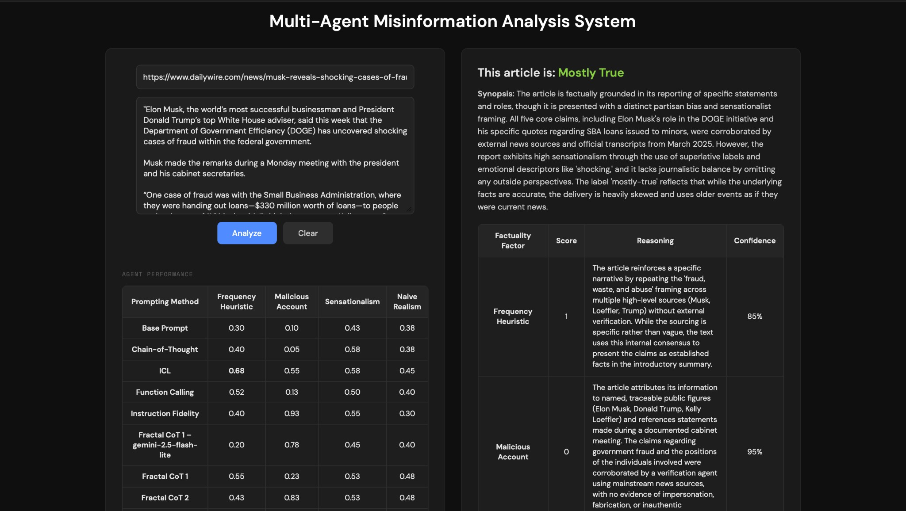

Key Results & Evaluation
Carefully structured prompting, particularly Fractal Chain-of-Thought reasoning, substantially improves factuality factor accuracy compared to naive baselines, while reducing hallucinations and misclassifications.
Our primary evaluation metric was accuracy, measured against our ground-truth dataset of 40 hand-labeled articles. To rigorously measure the impact of our prompt engineering, we established a zero-shot baseline for each factuality factor. This baseline asked the model to score the article using only the core definitions of the factor, without any examples or complex reasoning steps. As shown in the data below, the baseline performance was generally poor, with the Malicious Account agent scoring as low as 0.1 accuracy. By progressively layering techniques, moving from In-Context Learning (ICL) to Function Calling, and finally to Fractal Chain-of-Thought (FCoT), we were able to see which reasoning structures drove performance improvements, ultimately pushing our Malicious Account accuracy to 0.95.
Summary of accuracies
| Prompt | Frequency heuristic | Malicious account | Sensationalism | Naive realism |
|---|---|---|---|---|
| Base | 0.3 | 0.1 | 0.425 | 0.375 |
| Chain-of-Thought | 0.4 | 0.05 | 0.575 | 0.45 |
| In-Context Learning (ICL) | 0.675 | 0.55 | 0.575 | 0.45 |
| Function Calling | 0.525 | 0.125 | 0.5 | 0.4 |
| FCoT 1 (Gemini 2.5 Flash-Lite) | 0.2 | 0.775 | 0.45 | 0.4 |
| FCoT 1 | 0.55 | 0.225 | 0.525 | 0.475 |
| FCoT 3 | 0.525 | 0.95 | 0.575 | 0.475 |
| FCoT 4 (final) | 0.65 | 0.95 | 0.675 | 0.40 |
Every prompt was evaluated using Gemini 3-Flash-Preview unless otherwise specified.
Factor-wise findings
Limitations
While our multi-agent framework successfully improved factuality evaluation, we encountered several limitations during deployment:
- Computational overhead & token consumption. The most successful prompting strategy, Fractal Chain-of-Thought (FCoT), requires three internal reasoning loops per agent, running in parallel across four different factuality factors. This multi-iterative approach drastically increases both token usage and processing time compared to a standard zero-shot prompt, introducing a trade-off between accuracy and computational efficiency.
- Quotation vs. author voice. Early iterations of our system suffered from false positives by penalizing journalists who simply quoted a politician's exaggerated statements. While FCoT 4 largely corrected this by instructing the agent to isolate the author's narrative voice, highly blended articles can still occasionally confuse the agents.
Article Results Example
